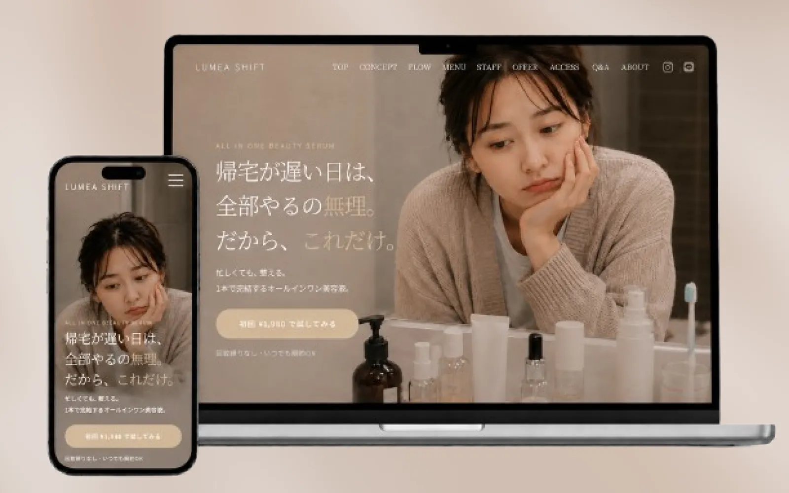
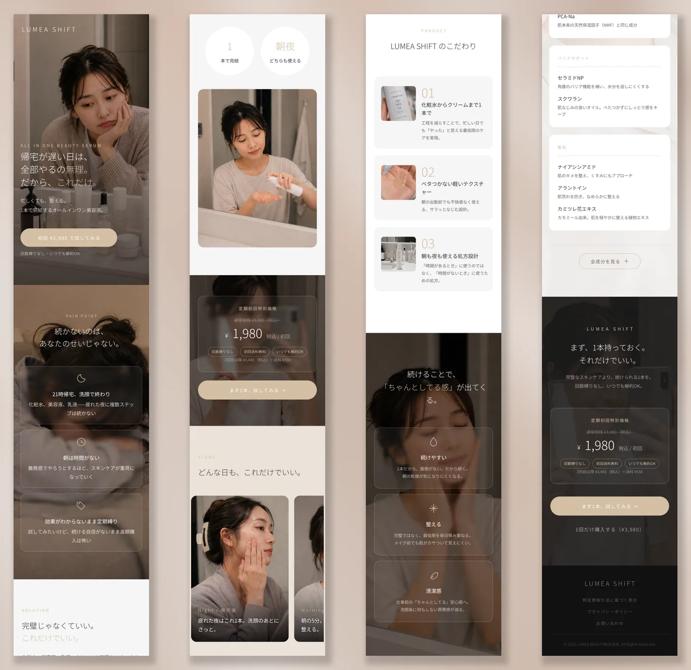

PROJECT / CASE STUDY
LUMEA SHIFT
LP / Reels

01
OVERVIEW
概要
オールインワン美容液「LUMEA SHIFT」のLPとリールを、ひとつの世界観で設計した自主制作。Instagramリールから訪れた人に、定期購入を申し込んでもらうことを目指しました。
02
TARGET
ターゲット
20代後半〜30代の女性。仕事が忙しく、毎日のスキンケアを時短したい人を想定しました。
03
DESIGN POINT
工夫したポイント
- リールから購入までの流れリールからの流入を想定し、「共感」→「商品理解」→「不安解消」→「購入」の順にLPを構成しました。
- AIで生成したオリジナルアバターAIでオリジナルのアバターを生成し、リールとLP内の動画に活用しています。
- 購入機会を逃さない申し込みのタイミングを逃さないよう、ポップアップフォームを実装しました。
04
SCREENS
画面イメージ

05
REELS
リール動画
06
VIDEO
使用した動画
AI動画生成
Visit Website ↗（外部サイトへ移動します）
NEXT PROJECTとおまち夏花火ナイト
制作について相談する →
※クラウドソーシング経由の方は、応募元のメッセージからご連絡ください。